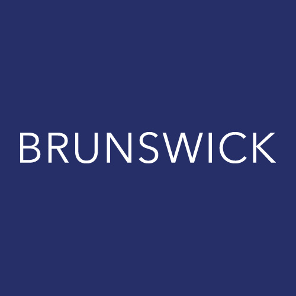
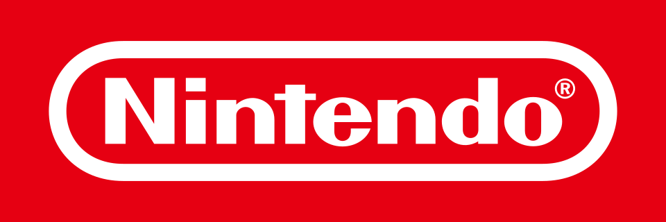
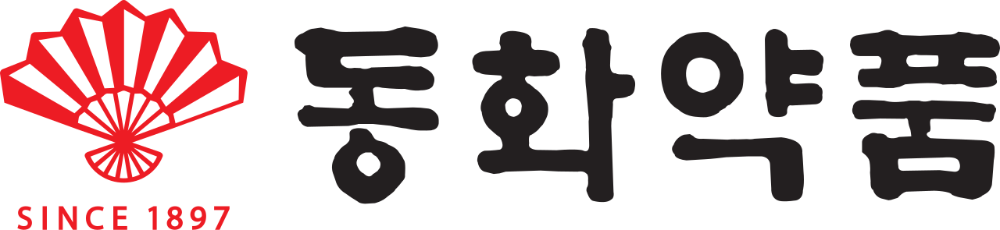
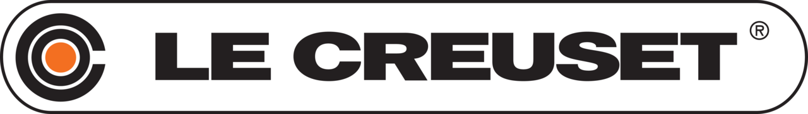
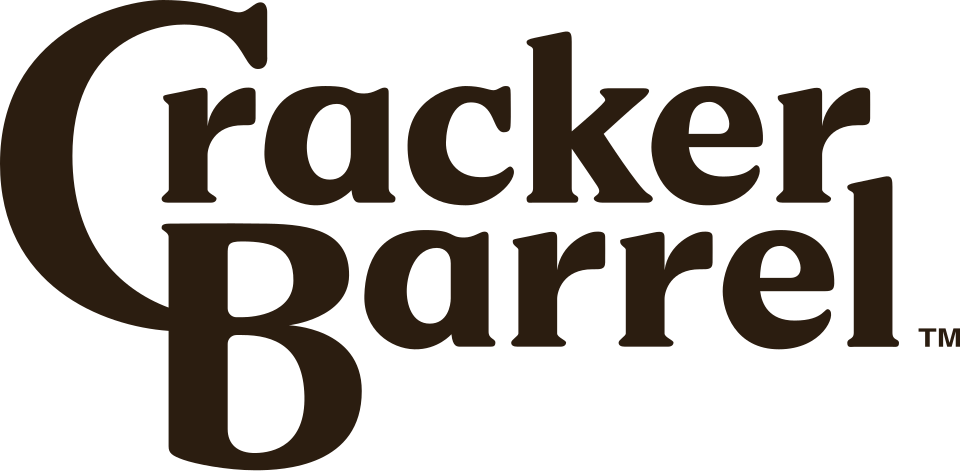
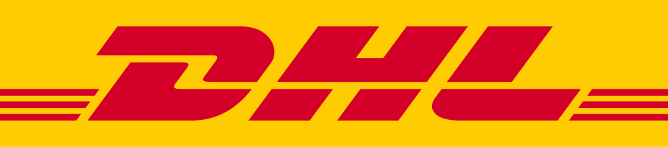
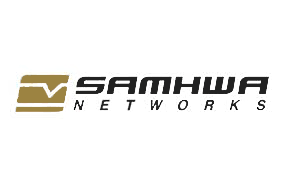
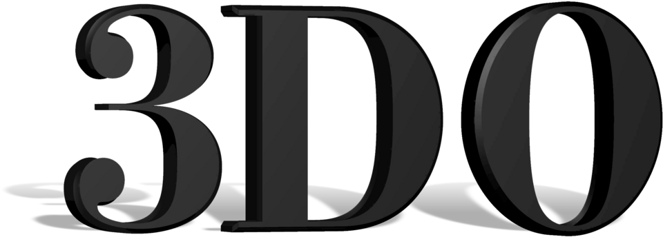
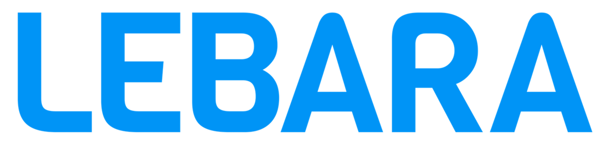
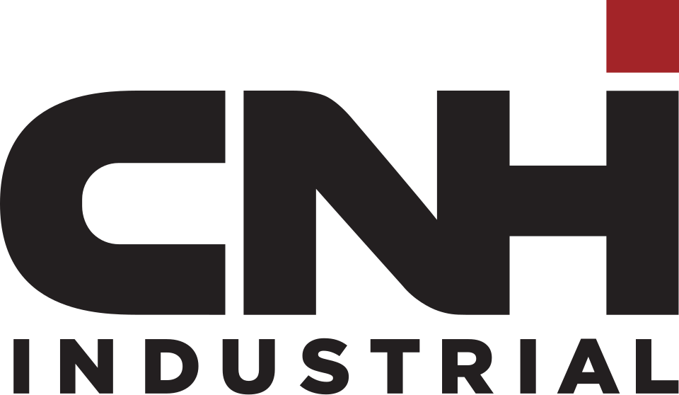

9월에 태어난 브랜드 107곳
9월에 태어난 브랜드 107곳을 탄생일 순으로 모았습니다. 구글(Google), 위키미디어 공용(Wikimedia Commons), 틱톡(TikTok)가 모두 9월생입니다.
2026년 9월, 주년을 맞는 브랜드
9월 탄생 달력
날짜까지 확인된 90곳을 날짜 칸에 놓았습니다.
- 1타스르크루제+9
- 2유니레버
- 3소프트뱅크 그룹이베이+1
- 4퀘이커 오츠Sveriges Television+1
- 5토트넘 홋스퍼 FC아모레퍼시픽+2
- 6ValvolineFlensburger Brauerei+2
- 7위키미디어 공용델 테크놀로지스
- 8제페토
- 9한화생명시그마+1
- 10M&M's펄어비스
- 11
- 12라이트 에이드풋 로커+3
- 13빙그레트렐로
- 14
- 15Brunswick Corporation샤프+3
- 16제너럴 모터스알리탈리아+2
- 17부동산114Character.ai
- 18티파니비자+2
- 19Cracker Barrel
- 20홀 푸드 마켓틱톡
- 21케이크숍코어위브
- 22ABN AMROBNSF 철도
- 23Apatinska Brewery닌텐도+1
- 24에머슨 일렉트릭캐세이퍼시픽 항공+1
- 25동화약품모토로라+4
- 26푸조헨켈
- 27하얏트TGV+2
- 28바릴라파테+1
- 29반다이 남코 홀딩스영화의전당+1
- 30로저스 커뮤니케이션스말레이시아 항공+1
9월생 브랜드 연대순
 Apatinska Brewery식음료
Apatinska Brewery식음료 푸조(Peugeot)프랑스 · 모빌리티
푸조(Peugeot)프랑스 · 모빌리티 티파니(Tiffany & Co.)패션·럭셔리
티파니(Tiffany & Co.)패션·럭셔리
Brunswick Corporation미국 · 스포츠·아웃도어 Valvoline미국 · 모빌리티
Valvoline미국 · 모빌리티 헨켈(Henkel)독일 · 브랜드·비즈니스
헨켈(Henkel)독일 · 브랜드·비즈니스 퀘이커 오츠(Quaker Oats Company)미국 · 식음료
퀘이커 오츠(Quaker Oats Company)미국 · 식음료 바릴라(Barilla Group)이탈리아 · 식음료
바릴라(Barilla Group)이탈리아 · 식음료 토트넘 홋스퍼 FC(Tottenham Hotspur)스포츠·아웃도어
토트넘 홋스퍼 FC(Tottenham Hotspur)스포츠·아웃도어 Flensburger Brauerei독일 · 식음료
Flensburger Brauerei독일 · 식음료
닌텐도(Nintendo)일본 · 미디어·엔터테인먼트 에머슨 일렉트릭(Emerson Electric)미국 · 에너지·산업재
에머슨 일렉트릭(Emerson Electric)미국 · 에너지·산업재 파테(Pathé)프랑스 · 미디어·엔터테인먼트
파테(Pathé)프랑스 · 미디어·엔터테인먼트
동화약품(Dong Wha Pharm)한국 · 헬스·제약 질레트(Gillette)미국 · 뷰티·퍼스널케어
질레트(Gillette)미국 · 뷰티·퍼스널케어 타스(TASS)러시아 · 미디어·엔터테인먼트
타스(TASS)러시아 · 미디어·엔터테인먼트 제너럴 모터스(General Motors)미국 · 모빌리티
제너럴 모터스(General Motors)미국 · 모빌리티 샤프(Sharp Corporation)일본 · 기술·전자
샤프(Sharp Corporation)일본 · 기술·전자 캐나디안 타이어(Canadian Tire)캐나다 · 리테일·커머스
캐나디안 타이어(Canadian Tire)캐나다 · 리테일·커머스
르크루제(LE CREUSET)프랑스 · 홈·라이프스타일 벨기에 국철(SNCB/NMBS)벨기에 · 모빌리티
벨기에 국철(SNCB/NMBS)벨기에 · 모빌리티 모토로라(Motorola)미국 · 기술·전자
모토로라(Motorola)미국 · 기술·전자 유니레버(Unilever)영국 · 브랜드·비즈니스
유니레버(Unilever)영국 · 브랜드·비즈니스 퍼블릭스(Publix)미국 · 리테일·커머스
퍼블릭스(Publix)미국 · 리테일·커머스 유니버설 뮤직 그룹(Universal Music Group)미국 · 미디어·엔터테인먼트
유니버설 뮤직 그룹(Universal Music Group)미국 · 미디어·엔터테인먼트 M&M's미국 · 브랜드·비즈니스
M&M's미국 · 브랜드·비즈니스 아모레퍼시픽(Amorepacific)한국 · 뷰티·퍼스널케어
아모레퍼시픽(Amorepacific)한국 · 뷰티·퍼스널케어 한화생명(Hanwha Life)한국 · 브랜드·비즈니스
한화생명(Hanwha Life)한국 · 브랜드·비즈니스 알리탈리아(Alitalia)이탈리아 · 여행·호스피탈리티
알리탈리아(Alitalia)이탈리아 · 여행·호스피탈리티 캐세이퍼시픽 항공(Cathay Pacific)모빌리티
캐세이퍼시픽 항공(Cathay Pacific)모빌리티 혼다(Honda)일본 · 모빌리티
혼다(Honda)일본 · 모빌리티 대구텍(TaeguTec)한국 · 에너지·산업재
대구텍(TaeguTec)한국 · 에너지·산업재 누코(Nucor)미국 · 에너지·산업재
누코(Nucor)미국 · 에너지·산업재- Sveriges Television스웨덴 · 미디어·엔터테인먼트
 하얏트(Hyatt Hotels Corporation)미국 · 여행·호스피탈리티
하얏트(Hyatt Hotels Corporation)미국 · 여행·호스피탈리티 삼익악기(Samick)한국 · 홈·라이프스타일
삼익악기(Samick)한국 · 홈·라이프스타일 비자(Visa Inc.)미국 · 금융
비자(Visa Inc.)미국 · 금융 국제 개발 협회(International Development Association)미국 · 금융
국제 개발 협회(International Development Association)미국 · 금융 로저스 커뮤니케이션스(Rogers Communications)캐나다 · 미디어·엔터테인먼트
로저스 커뮤니케이션스(Rogers Communications)캐나다 · 미디어·엔터테인먼트 시그마(Sigma Corporation)일본 · 기술·전자
시그마(Sigma Corporation)일본 · 기술·전자 라이트 에이드(Rite Aid)미국 · 리테일·커머스
라이트 에이드(Rite Aid)미국 · 리테일·커머스 국가철도공단(Korea National Railway)한국 · 모빌리티
국가철도공단(Korea National Railway)한국 · 모빌리티 게토레이(Gatorade)미국 · 식음료
게토레이(Gatorade)미국 · 식음료 농심(Nongshim)한국 · 식음료
농심(Nongshim)한국 · 식음료 빙그레(Binggrae)한국 · 식음료
빙그레(Binggrae)한국 · 식음료 에버그린 해운(Evergreen Marine)대만 · 모빌리티
에버그린 해운(Evergreen Marine)대만 · 모빌리티 하이센스(Hisense)기술·전자
하이센스(Hisense)기술·전자
Cracker Barrel미국 · 식음료 플렉스(Flex Ltd.)미국 · 기술·전자
플렉스(Flex Ltd.)미국 · 기술·전자
DHL독일 · 브랜드·비즈니스- 한샘(Hanssem)홈·라이프스타일
 컵누들(Cup Noodles)식음료
컵누들(Cup Noodles)식음료 말레이시아 항공(Malaysia Airlines)말레이시아 · 여행·호스피탈리티
말레이시아 항공(Malaysia Airlines)말레이시아 · 여행·호스피탈리티 케이크숍(Kijkshop)네덜란드 · 리테일·커머스
케이크숍(Kijkshop)네덜란드 · 리테일·커머스- 홀홀란드 블루멘 마크(Holland Blumen Mark)오스트리아 · 리테일·커머스
 풋 로커(Foot Locker)미국 · 리테일·커머스
풋 로커(Foot Locker)미국 · 리테일·커머스 팩트셋(FactSet)미국 · 금융
팩트셋(FactSet)미국 · 금융 Universal Health Services미국 · 헬스·제약
Universal Health Services미국 · 헬스·제약 LabCorp미국 · 헬스·제약
LabCorp미국 · 헬스·제약
삼화네트웍스(Samhwa Networks)한국 · 미디어·엔터테인먼트 돈 키호테(Don Quijote)일본 · 리테일·커머스
돈 키호테(Don Quijote)일본 · 리테일·커머스 홀 푸드 마켓(Whole Foods Market)미국 · 리테일·커머스
홀 푸드 마켓(Whole Foods Market)미국 · 리테일·커머스 소프트뱅크 그룹(SoftBank Group)일본 · 금융
소프트뱅크 그룹(SoftBank Group)일본 · 금융- TGV프랑스 · 모빌리티
 Kingfisher plc영국 · 리테일·커머스
Kingfisher plc영국 · 리테일·커머스 코스트코(Costco)미국 · 리테일·커머스
코스트코(Costco)미국 · 리테일·커머스 화웨이(Huawei)중국 · 기술·전자
화웨이(Huawei)중국 · 기술·전자 렉서스(Lexus)일본 · 모빌리티
렉서스(Lexus)일본 · 모빌리티
The 3DO Company미국 · 미디어·엔터테인먼트 ABN AMRO네덜란드 · 금융
ABN AMRO네덜란드 · 금융 Cēsu Alus식음료
Cēsu Alus식음료 Axon Enterprise미국 · 에너지·산업재
Axon Enterprise미국 · 에너지·산업재 테이크투 인터랙티브(Take-Two Interactive)미국 · 미디어·엔터테인먼트
테이크투 인터랙티브(Take-Two Interactive)미국 · 미디어·엔터테인먼트- 이베이(EBay)미국 · 리테일·커머스
 BNSF 철도(BNSF Railway)미국 · 모빌리티
BNSF 철도(BNSF Railway)미국 · 모빌리티 언더아머(Under Armour)미국 · 스포츠·아웃도어
언더아머(Under Armour)미국 · 스포츠·아웃도어 홈플러스(Homeplus)한국 · 리테일·커머스
홈플러스(Homeplus)한국 · 리테일·커머스 중국이동통신(China Mobile)기술·전자
중국이동통신(China Mobile)기술·전자 얀덱스(Yandex)러시아 · 기술·전자
얀덱스(Yandex)러시아 · 기술·전자 구글(Google)미국 · 기술·전자
구글(Google)미국 · 기술·전자 코러스 엔터테인먼트(Corus Entertainment)캐나다 · 미디어·엔터테인먼트
코러스 엔터테인먼트(Corus Entertainment)캐나다 · 미디어·엔터테인먼트 부동산114(R114)브랜드·비즈니스
부동산114(R114)브랜드·비즈니스 현대자동차그룹(Hyundai Motor Group)한국 · 모빌리티
현대자동차그룹(Hyundai Motor Group)한국 · 모빌리티
레바라(Lebara)브랜드·비즈니스- 신한금융그룹(Shinhan Financial Group)한국 · 금융
 뉴시스(Newsis News Agency)한국 · 미디어·엔터테인먼트
뉴시스(Newsis News Agency)한국 · 미디어·엔터테인먼트 JFE 홀딩스(JFE Holdings)일본 · 에너지·산업재
JFE 홀딩스(JFE Holdings)일본 · 에너지·산업재 제페토(Zepetto)한국 · 미디어·엔터테인먼트
제페토(Zepetto)한국 · 미디어·엔터테인먼트 Synchrony Financial미국 · 금융
Synchrony Financial미국 · 금융 파이러트베이(The Pirate Bay)스웨덴 · 미디어·엔터테인먼트
파이러트베이(The Pirate Bay)스웨덴 · 미디어·엔터테인먼트 위키미디어 공용(Wikimedia Commons)미디어·엔터테인먼트
위키미디어 공용(Wikimedia Commons)미디어·엔터테인먼트- 프리스케일 세미컨덕터(Freescale Semiconductor)미국 · 기술·전자
 반다이 남코 홀딩스(Bandai Namco Holdings)일본 · 미디어·엔터테인먼트
반다이 남코 홀딩스(Bandai Namco Holdings)일본 · 미디어·엔터테인먼트 모더나(Moderna)미국 · 헬스·제약
모더나(Moderna)미국 · 헬스·제약 펄어비스(Pearl Abyss)한국 · 미디어·엔터테인먼트
펄어비스(Pearl Abyss)한국 · 미디어·엔터테인먼트 MBC경남한국 · 미디어·엔터테인먼트
MBC경남한국 · 미디어·엔터테인먼트- 트렐로(Trello)미국 · 기술·전자
 스냅(Snap Inc.)미국 · 기술·전자
스냅(Snap Inc.)미국 · 기술·전자- 영영화의전당(Busan Cinema Center)한국 · 미디어·엔터테인먼트
- AOMG한국 · 미디어·엔터테인먼트

CNH 산업(CNH Industrial)네덜란드 · 에너지·산업재 핀둬둬(Pinduoduo)중국 · 리테일·커머스
핀둬둬(Pinduoduo)중국 · 리테일·커머스 델 테크놀로지스(Dell Technologies)미국 · 기술·전자
델 테크놀로지스(Dell Technologies)미국 · 기술·전자 틱톡(TikTok)미디어·엔터테인먼트
틱톡(TikTok)미디어·엔터테인먼트 코어위브(CoreWeave)미국 · AI·인공지능
코어위브(CoreWeave)미국 · AI·인공지능 Character.aiAI·인공지능
Character.aiAI·인공지능 TKO Group Holdings미국 · 스포츠·아웃도어
TKO Group Holdings미국 · 스포츠·아웃도어
9월에 태어난 것으로 확인된 브랜드는 107곳입니다. 가장 오래된 곳은 1756년의 Apatinska Brewery, 가장 최근은 2023년의 TKO Group Holdings입니다. 2026년 9월에는 Apatinska Brewery(270주년), Valvoline(160주년), 헨켈(Henkel)(150주년) 등 16곳이 주년을 맞습니다. 생일이 같은 브랜드도 있습니다. 9월 1일에는 타스(TASS)(1904)와 르크루제(LE CREUSET)(1925)와 벨기에 국철(SNCB/NMBS)(1926), 9월 25일에는 동화약품(Dong Wha Pharm)(1897)와 모토로라(Motorola)(1928)와 플렉스(Flex Ltd.)(1969)가 태어났습니다. 설립연도가 확인된 브랜드는 106개이며 가장 오래된 곳은 1810년, 가장 최근은 2023년에 시작했습니다. 시기별로는 1900년 이전 13개, 1900~1949년 17개, 1950~1999년 51개, 2000년 이후 25개입니다. 수록 자료로는 로고 이미지 105개, 로고 변천 자료 8개, 연혁 타임라인 11개를 갖췄습니다. 이 가운데 98개는 공식 웹사이트가 일치하는 위키데이터 개체로 연결해 두었습니다. 날짜는 위키데이터, 위키백과 정보상자, 브랜드 본문 가운데 같은 연월로 확인되는 값만 썼고, 출처끼리 다르면 싣지 않았습니다.